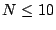
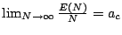
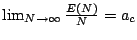
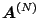
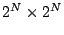
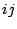
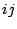
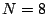
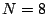

|
Keywords: sequence alignment, statistical significance
One of the oustanding open problems at the heart
of gapped sequence alignment is the longest common subsequence
(LCS) problem i.e. given two random sequences of length
 (in a finite alphabet), what is the
longest common subsequence shared by the two sequences? The
expected value is known to lie within certain limits. In the
simplest version of the problem, the sequences are chosen
randomly from a binary alphabet. The distributions generated
in the binary case can be generalized to other finite (DNA and
protein) alphabets.
(in a finite alphabet), what is the
longest common subsequence shared by the two sequences? The
expected value is known to lie within certain limits. In the
simplest version of the problem, the sequences are chosen
randomly from a binary alphabet. The distributions generated
in the binary case can be generalized to other finite (DNA and
protein) alphabets.
We describe an iterative approach that
determines the pairs of sequences whose scores increased by one
upon the addition of one letter to each sequence. Those sequence
pairs whose score did increase are indicated in black on an
all-against-all array. An interesting mathematical feature of this
array is its fractal-like structure. As the sequence length
increases, the area of the black approaches the
Chvátal-Sankoff constant  (the
proportionality constant for the linear growth of
(the
proportionality constant for the linear growth of  , the expected length of the LCS with sequence
length). We show that the area in fact converges more rapidly
to
, the expected length of the LCS with sequence
length). We show that the area in fact converges more rapidly
to  than
than
 .
.
In the setting of computational biology, the
question of the LCS of two random sequences (from an alphabet of
letters) was raised initially in
[1]. Exact calculations of
the expected length of the LCS were made in the binary case for
sequences of length  as well as
Monte-Carlo simulations for higher values of  .
In [2] it is noted that
(for zero or low gap penalties) the expected length of the LCS,
.
In [2] it is noted that
(for zero or low gap penalties) the expected length of the LCS,
 increases linearly with
increases linearly with  i.e.
, the
Chávtal-Sankoff constant.
i.e.
, the
Chávtal-Sankoff constant.
Since 1975, tight bounds have been established
on  for large values of
for large values of  [3] [4] [5]. Here we consider all
possible sequence pairs for any value of
[3] [4] [5]. Here we consider all
possible sequence pairs for any value of  and we define
and we define  as the
proportion of sequence pairs whose score increased by one when
a new letter was added to the sequence. It can be proven that
as the
proportion of sequence pairs whose score increased by one when
a new letter was added to the sequence. It can be proven that
 converges more rapidly towards
converges more rapidly towards
 than
than
 as outlined below.
as outlined below.
Let
 be the
 matrix of scores arising from
the pairwise matching all binary sequences of length
 . The score at the th (
. The score at the th (
 ) position of the matrix is
the length of the LCS between the two binary sequences of length
) position of the matrix is
the length of the LCS between the two binary sequences of length
 such that the first sequence is the binary
representation of
such that the first sequence is the binary
representation of  and the second is the
binary representation of
and the second is the
binary representation of  . For example,
with , the first, second, third and
last rows (and correspondingly the columns) of this matrix
represent the positions of the following sequences:
. For example,
with , the first, second, third and
last rows (and correspondingly the columns) of this matrix
represent the positions of the following sequences:
 .
.
Now we construct a matrix
 consisting of four copies of
consisting of four copies of
 .
.
![\begin{displaymath} \bf {B}^{(N-1)} = \left[ \begin{array}{c\vert c} \mb... ...(N-1)} & \mbox{\boldmath$A$}^{(N-1)} \end{array} \right] \end{displaymath}](img24.png)
Let  denote the expected length
of the LCS of two random binary sequences of length
denote the expected length
of the LCS of two random binary sequences of length  . We know that
. We know that
 is monotonically increasing
with
is monotonically increasing
with  and
and
 , so
, so
 It is
straightforward to show that
It is
straightforward to show that
 , and using the identity
, and using the identity
 it follows
that
it follows
that
 We know that
We know that
 converges to the
Chvátal-Sankoff constant
converges to the
Chvátal-Sankoff constant  . It is
straightforward to show that
. It is
straightforward to show that  also
converges to
also
converges to  and the above
inequality shows that it converges more rapidly.
and the above
inequality shows that it converges more rapidly.
|